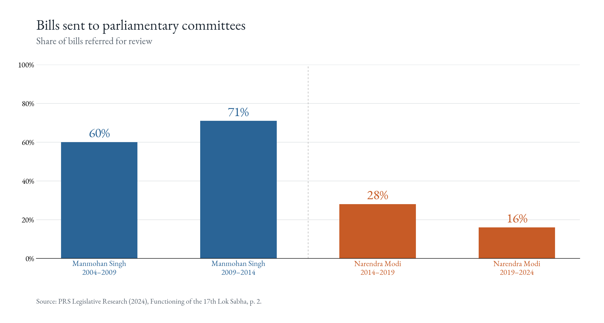
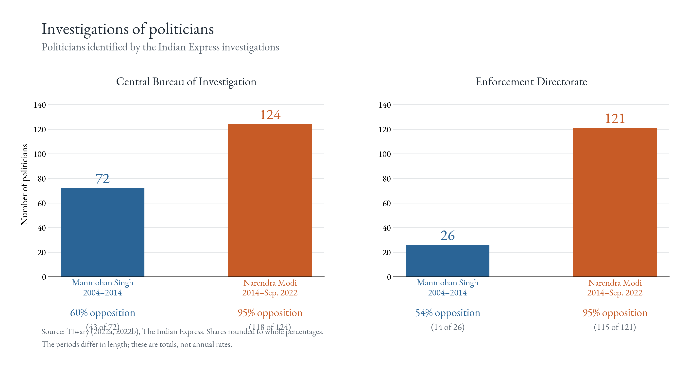
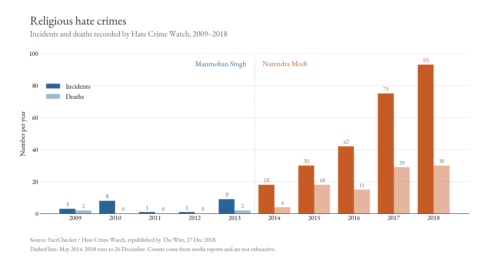
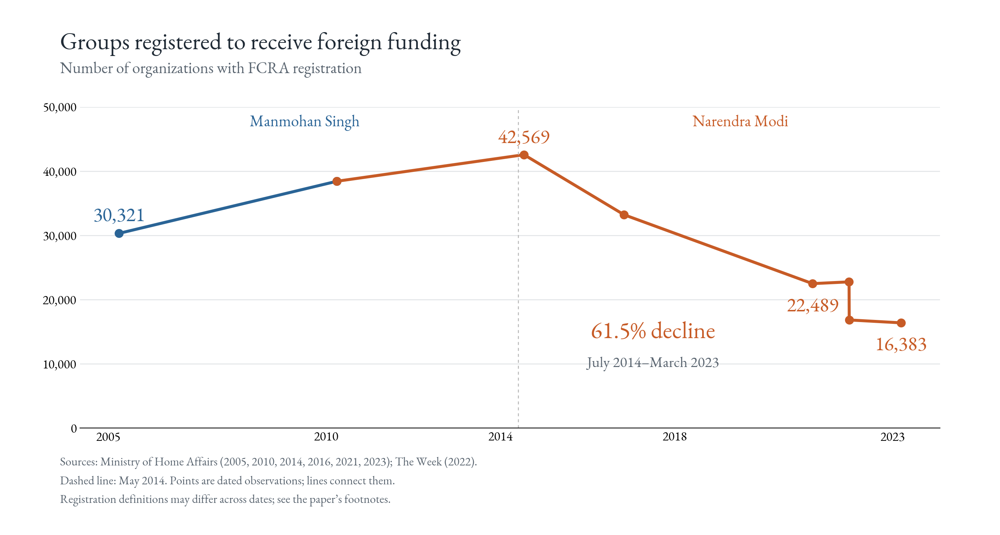
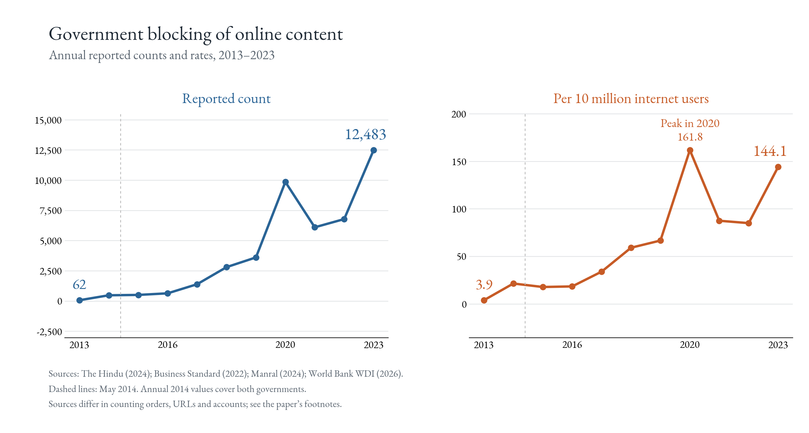

Beyond the indices
The synthetic control results in the paper rest on the V-Dem indices, which are coded by country experts. A fair question is whether anything more direct points the same way. It does. None of what follows is a counterfactual estimate; these are simple before-and-after comparisons from public sources, and the paper reports them as such. Every number has a document, a page and a sentence behind it, listed in the verification file in the replication repository.
Parliamentary scrutiny. The share of bills sent to a parliamentary committee for review was 60% and 71% in Manmohan Singh’s two terms. In Modi’s first two it was 28% and 16% (PRS Legislative Research, 2024).
Investigations of politicians. The Indian Express identified 72 prominent politicians investigated by the Central Bureau of Investigation between 2004 and 2014, 60% of them from opposition parties. Between 2014 and September 2022 it identified 124, of whom 95% were from the opposition. The Enforcement Directorate, which handles money-laundering and foreign-exchange cases, went from 26 politicians (54% opposition) to 121 (95%). The Modi-era period is shorter, and the counts are higher (Tiwary, 2022a, 2022b).
Religious hate crimes. Hate Crime Watch recorded between one and nine incidents a year in 2009–2013, with zero to two deaths. In 2018 it recorded 93 incidents and 30 deaths. The counts come from media reports, so they are a floor, and they include victims from majority and minority communities (FactChecker, 2018).
Civil-society funding. The number of organizations registered under the Foreign Contribution (Regulation) Act, which is what allows a group to receive money from abroad, fell from 42,569 in July 2014 to 16,383 in March 2023, a decline of 61.5% (Ministry of Home Affairs). This is about access to funding, not necessarily the number of groups still operating.
Online blocking. Government blocking orders covered 62 web addresses in 2013 and 12,483 in 2023. India’s internet population grew a great deal over that period, but blocking grew much faster: per 10 million internet users, from 3.9 to 144.1, with a peak in 2020 (The Hindu, 2024; Manral, 2024; authors’ calculations from World Bank data).




